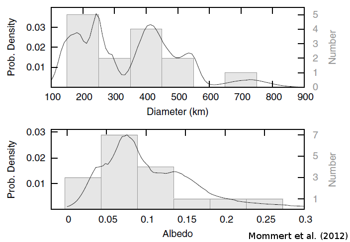

Plutinos sind eine Unterpopulation der transneptunischen Objekte (TNOs), die aus ursprünglichen und eisigen Objekten am Rand des Sonnensystems bestehen. Die Umlaufbahnen der Plutinos – die nach ihrem Prototyp, Pluto, benannt sind – stehen in einer 2:3-Resonanz mit Neptun, was bedeutet, dass ein Plutino, während er 2 vollständige Umläufe um die Sonne vollzieht, Neptun 3 Umläufe vollendet. Diese “mittlere Bewegungsresonanz” sorgt für eine hohe Stabilität der Umlaufbahnen der Plutinos. Daher sind Plutinos dynamisch und physikalisch ursprüngliche Objekte.
Im Rahmen des Projekts TNOs are Cool!-Projektes haben wir 123 verschiedene TNOs, darunter eine Reihe von Plutinos, mit dem Herschel-Weltraumteleskop im Ferninfrarot- und Sub-mm-Wellenlängen beobachtet. Herschel maß die thermische Emission dieser kalten Objekte, die mit optischen Helligkeitsmessungen kombiniert werden kann, um ihre physikalischen Eigenschaften mithilfe von thermischen Modellen einzuschränken.
Aus unseren Beobachtungen von 18 Plutinos, von denen einer Pluto war, leiteten wir die Durchmesser und Albedos dieser Objekte ab.
{kind=link}

Wir finden einen gewichteten Mittelwert des Albedos von Plutinos von 0,08±0,03, der vergleichbar ist mit den Albedos von “Scattered Disk Objects” und “Hot Classicals” (andere TNO-Unterpopulationen), sowie mit den Kernen von kurzperiodischen Kometen und Zentauren. Ein Vergleich der gemessenen Albedos und Durchmesser mit den orbitalen Eigenschaften zeigt keine signifikante Korrelation; jedoch gibt es einen schwachen Trend, dass kleinere Plutinos rötlicher sind. Wir finden auch qualitative Hinweise darauf, dass eisige Plutinos höhere Albedos als der Durchschnitt aufweisen. Pluto wurde von dieser statistischen Analyse ausgeschlossen, da seine thermische Emission nicht leicht mit einem einfachen thermischen Modell angepasst werden kann, was auf seine Binärnatur und Atmosphäre zurückzuführen ist.
Interessanterweise hat keiner der Plutinos, die wir untersucht haben, ein Albedo, das so hoch ist wie das von Pluto (0,52 durchschnittliches geometrisches Albedo) und keiner von ihnen ist auch nur annähernd so groß wie Pluto (~2400 km im Durchmesser). Daher ist Pluto unter der Plutino-Population ziemlich einzigartig.
Die Ergebnisse dieser Studie wurden als Mommert et al. (2012) in der Zeitschrift Astronomy & Astrophysics veröffentlicht.
Bibliographie
- Mommert, M., Harris, A. W., Kiss, C., Pál, A., Santos-Sanz, P., Stansberry, J., Delsanti, A., Vilenius, E., Müller, T. G., Peixinho, N., Lellouch, E., Szalai, N., Henry, F., Duffard, R., Fornasier, S., Hartogh, P., Mueller, M., Ortiz, J. L., Protopapa, S., Rengel, M., & Thirouin, A. (2012), “TNOs are cool: A survey of the trans-Neptunian region. V. Physical characterization of 18 Plutinos using Herschel-PACS observations”, Astronomy and Astrophysics, 541, A93., publication, arxiv